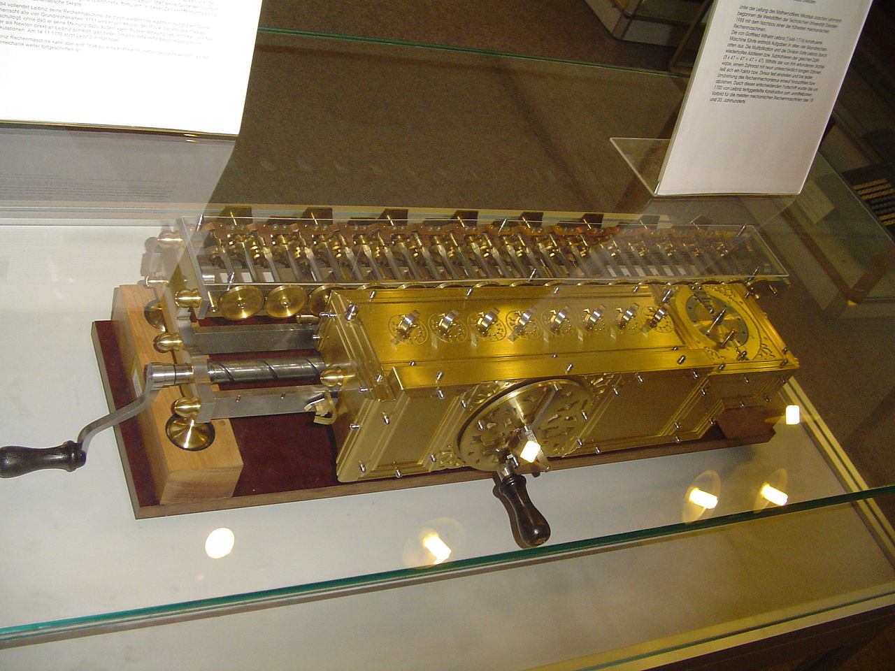
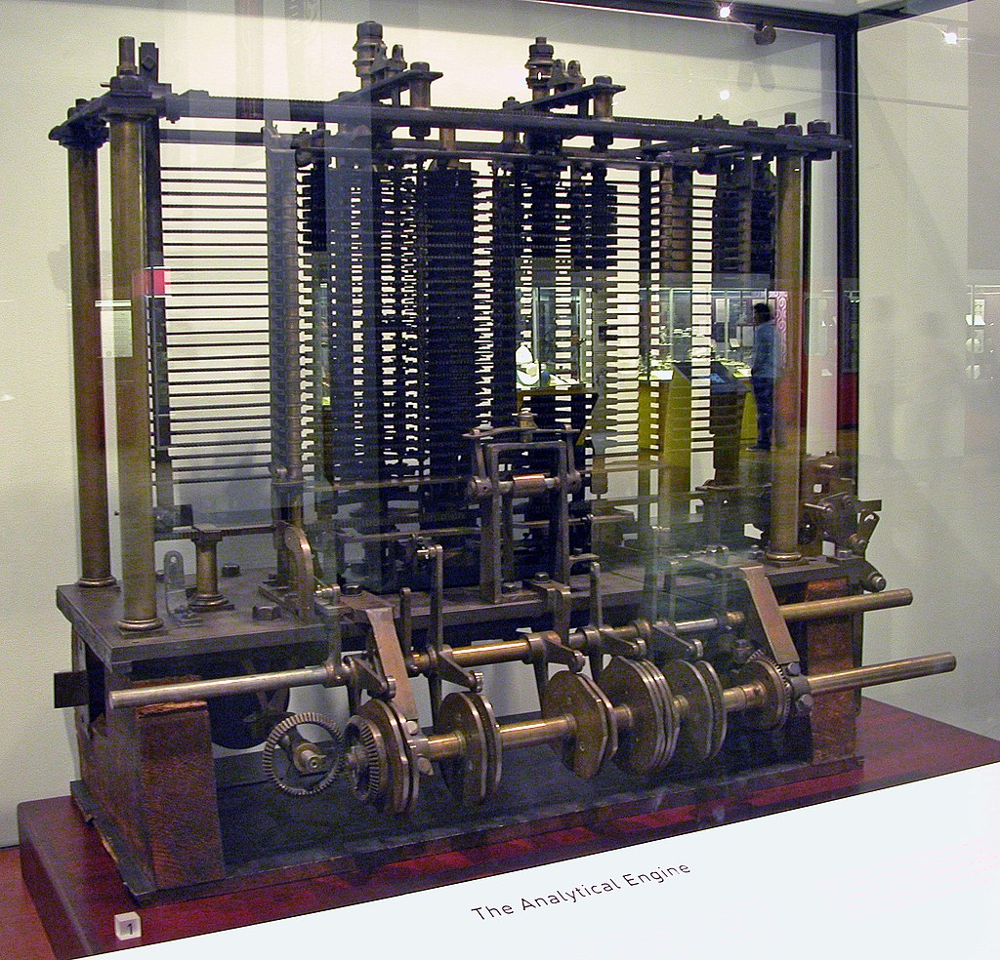
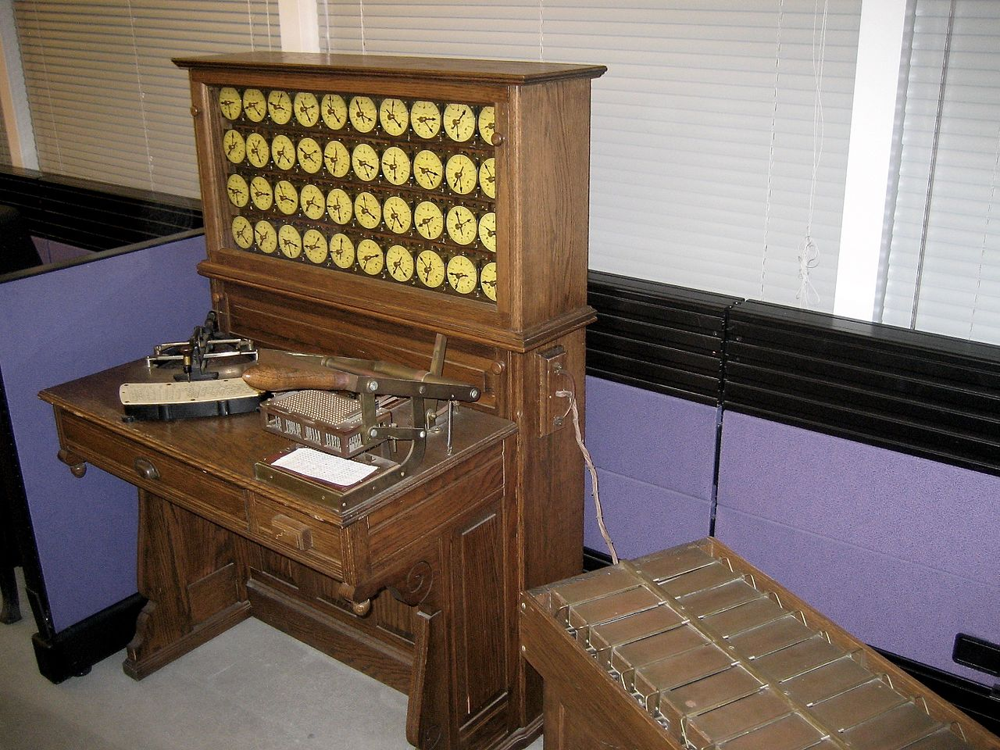
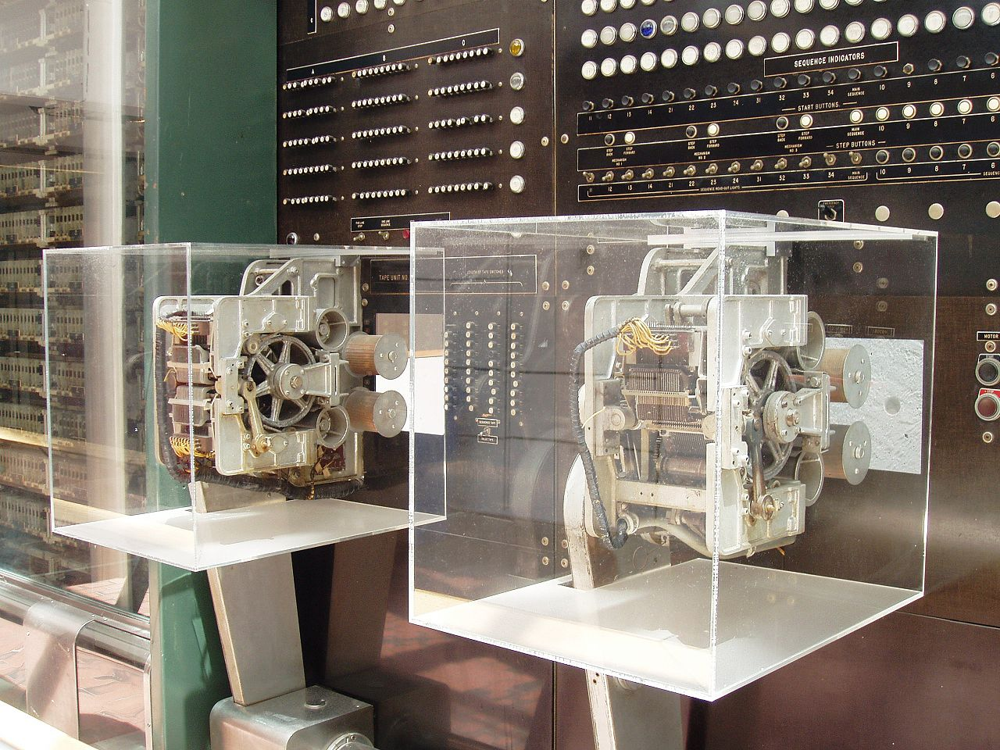
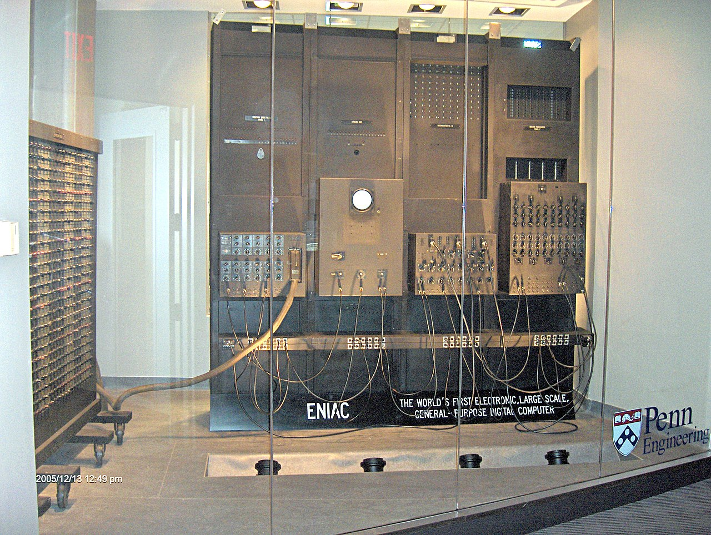

Cuneiform is a system of writing first developed by the
ancient Sumerians of Mesopotamia c. 3500-3000 BCE. It is
considered the most significant among the many cultural
contributions of the Sumerians and the greatest among those
of the Sumerian city of Uruk which advanced the writing of
cuneiform c. 3200 BCE.
3000 BCE.
Abacus
The abacus also called a counting frame, is a calculating tool
that was in use in the ancient Near East, Europe, China, and
Russia, centuries before the adoption of the written Arabic
numeral system.The exact origin of the abacus is still
unknown. The abacus essentially consists of a number of rows
of movable beads or other objects, which represent digits. One
of two numbers is set up, and the beads are manipulated to
implement an operation involving a second number (e.g.,
addition), or rarely a square or cubic root.
1617 CE.
Napier’s Bones
Napier's bones is a manually-operated calculating device
created by John Napier of Merchiston, Scotland for the
calculation of products and quotients of numbers. The method
was based on lattice multiplication, and also called
'rabdology', a word invented by Napier. Napier published his
version in 1617 in Rabdologiæ, printed in Edinburgh,
dedicated to his patron Alexander Seton.
1642 CE.
Pascal's calculator
Pascal's calculatoris a mechanical calculator invented by Blaise
Pascal in the mid 17th century. Pascal was led to develop a
calculator by the laborious arithmetical calculations required
by his father's work as the supervisor of taxes in Rouen.
He designed the machine to add and subtract two numbers
directly and to perform multiplication and division through
repeated addition or subtraction.
1673 CE.

Stepped Reckoner
The step reckoner (or stepped reckoner) was a digital mechanical
calculator invented by the German mathematician Gottfried
Wilhelm Leibniz around 1673 and completed in 1694.The name
comes from the translation of the German term for its
operating mechanism, Staffelwalze, meaning "stepped drum". It
was the first calculator that could perform all four
arithmetic operations.
1801 CE.
Difference Engine
A difference engine, first created by Charles Babbage, is an automatic
mechanical calculator designed to tabulate polynomial functions.
Its name is derived from the method of divided differences, a way
to interpolate or tabulate functions by using a small set of
polynomial co-efficients. Most mathematical functions commonly used
by engineers, scientists and navigators, including logarithmic and
trigonometric functions, can be approximated by polynomials, so a
difference engine can compute many useful tables of numbers.
1837 CE.

Analytical Engine
The Analytical Engine was a proposed mechanical general-purpose
computer designed by English mathematician and computer pioneer
Charles Babbage. and with the assistance of Ada Lovelace. It was
first described in 1837 as the successor to Babbage's difference
engine a design for a simpler mechanical computer.
1890 CE.

Tabulating Machine
The tabulating machine was an electromechanical machine designed to
assist in summarizing information stored on punched cards. Invented
by Herman Hollerith, the machine was developed to help process
data for the 1890 U.S. Census. Later models were widely used for
business applications such as accounting and inventory control. It
spawned a class of machines, known as unit record equipment, and
the data processing industry.
1944 CE.

Harvard Mark I
The IBM Automatic Sequence Controlled Calculator (ASCC), called
Mark I by Harvard University’s staff, was a general purpose
electromechanical computer that was used in the war effort during
the last part of World War II.
1945 CE.
EDVAC
EDVAC (Electronic Discrete Variable Automatic Computer) was one of the
earliest electronic computers. Unlike its predecessor the ENIAC, it
was binary rather than decimal, and was designed to be a
stored-program computer.
1949 CE.
EDSAC
The Electronic delay storage automatic calculator (EDSAC) was an early
British computer. Inspired by John von Neumann's seminal First
Draft of a Report on the EDVAC, the machine was constructed by
Maurice Wilkes and his team at the University of Cambridge
Mathematical Laboratory in England. EDSAC was the second electronic
digital stored-program computer to go into regular service.
1946 CE.

ENIAC
ENIAC (Electronic Numerical Integrator and Computer)
was the first electronic general-purpose digital computer.
It was Turing-complete, and able to solve "a large class of
numerical problems" through reprogramming.
1954 CE.
>
UNIVAC I
The UNIVAC I (UNIVersal Automatic Computer I) was the first
general-purpose electronic digital computer design for business
application produced in the United States.It was designed
principally by J. Presper Eckert and John Mauchly, the inventors of
the ENIAC. Design work was started by their company, Eckert–Mauchly
Computer Corporation (EMCC), and was completed after the company
had been acquired by Remington Rand . In the years before successor
models of the UNIVAC I appeared, the machine was simply known as
"the UNIVAC".


 >
>